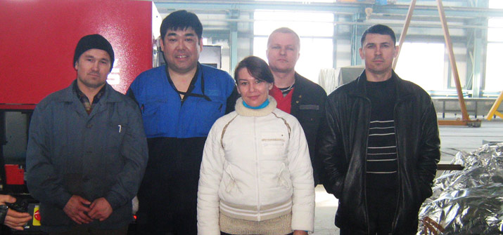
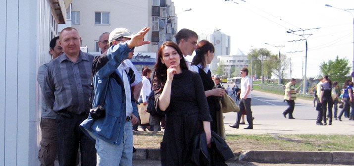
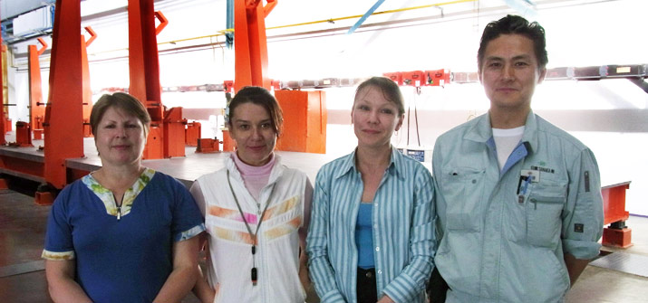

Translator/Interpreter, Freelancer



BackgroundTranslation Experience: from 1991 – to date. Numerous translation projects which include translation of all types of texts, documents, letters, books, websites etc. in many fields including Oil and Gas Industry, Engineering Industry, Construction, Economy and Business, Legal, Finance, Textile and etc. Consecutive interpretation +7 917 650 40 17
|
Services
Content: Oil and Gas Industry, Engineering Industry, Construction, Economy and Business, Legal, Finance, Textile, IT and etc. |
Translation samples
- Recommendations for EKRASMS software package setting (русский/английский)
- 110/10-6кВ - 25MВA Mobile Sub-Station (русский/английский)
- SURETYSHIP (русский/английский)